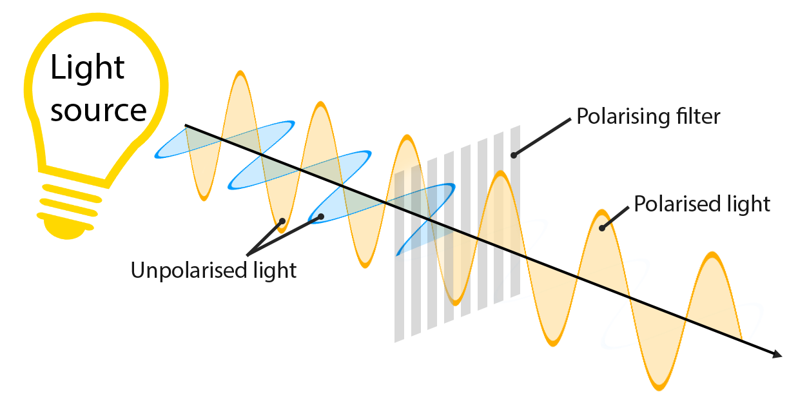
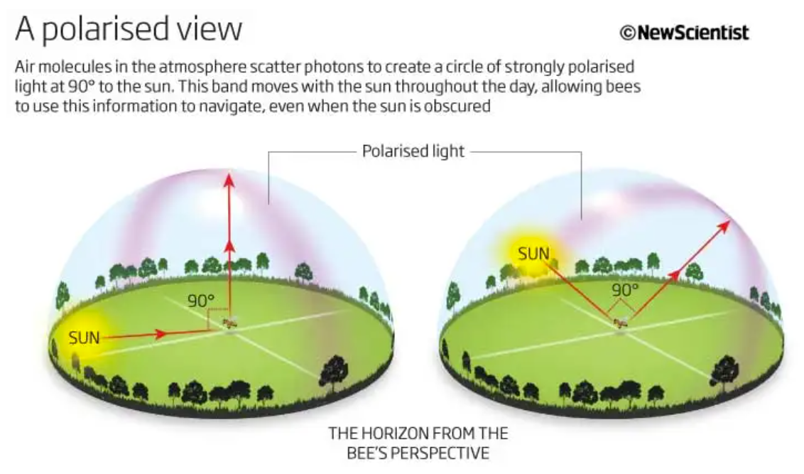
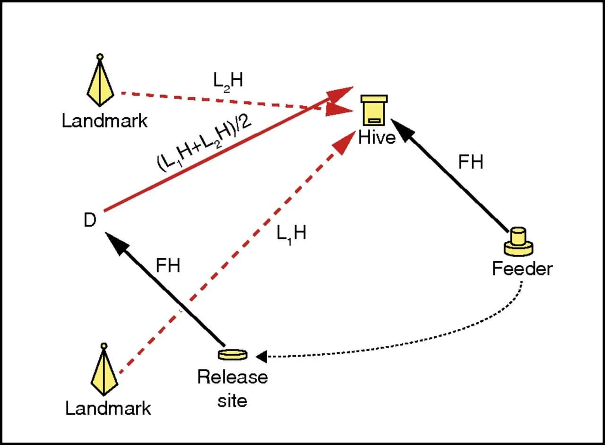
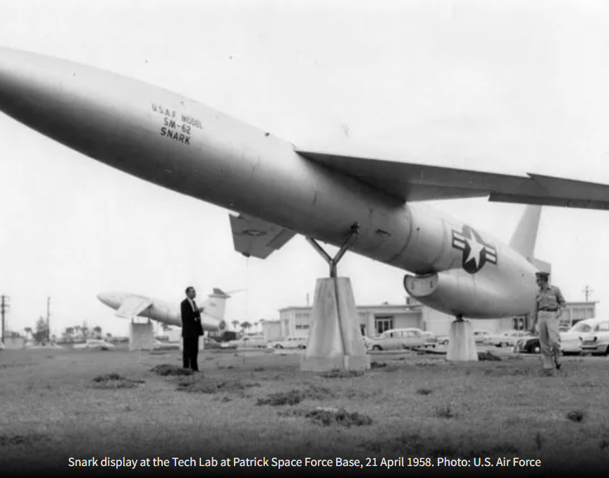
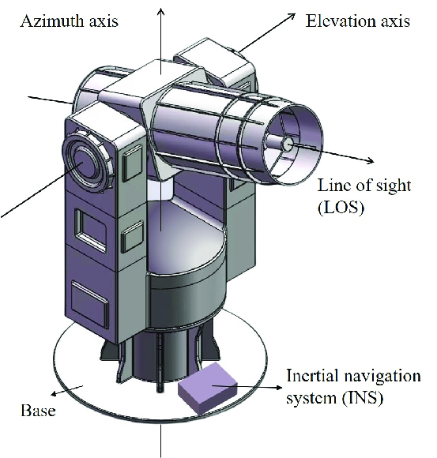
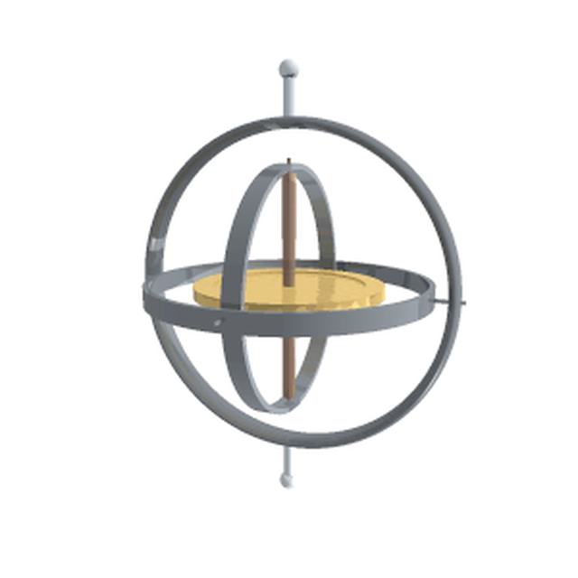
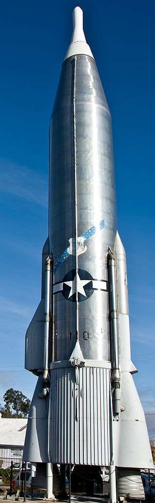
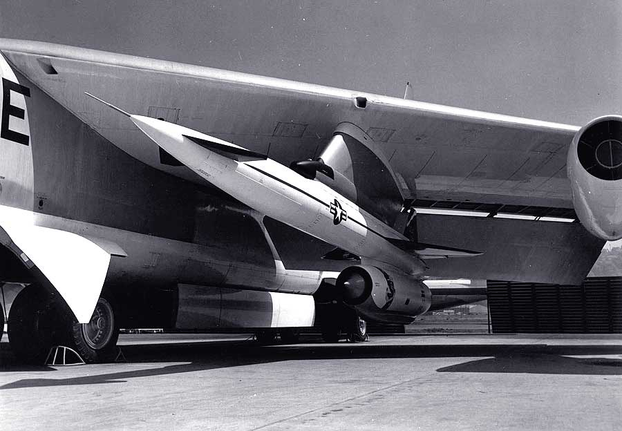

레이더 개발 이야기 번외편) - 꿀벌과 순항 미사일 이야기
게시: 2023-06-08T06:30:36+09:00
<놀라운 항법사, 꿀벌> WW2 당시 양측 폭격기들의 항법 관련 이야기를 보면 해와 별을 보고 길을 찾는 것은 진짜 어려운 일. 독일 공군이 쓰는 전파 항법 시스템에 재밍을 했더니, 독일 폭격기가 영국 비행장에 착륙한 뒤에 독일이 아닌 것을 알고 당황하더라는 이야기까지 있음. 그런데 꿀벌은 벌집에서 최대 12km까지 떨어진 곳까지 날아가 꿀을 따움. 몸집 크기를 비교하면 사람으로 치면 2천km 밖까지 날아가는 셈. 다들 아시다시피 벌에게는 GPS는 커녕 육분의도 나침반도 시계도 없음.
(아마 밤에 꽃밭에서 꿀벌 보신 분들이 거의 없을 텐데, 왜 그런지 생각해보신 적 있는지?)
Q1. 똑똑하다는 공군 항법사들도 그 정도면 자기 기지를 못 찾아오는 경우가 많은데, 꿀벌은 대체 어떻게 집을 찾아 돌아올까? : 핵심은 태양. 꿀벌은 기본적으로 태양을 보는 천문 항법을 써서 자신의 벌집을 찾아옴. 물론 오차가 크기 때문에, 집 근처까지 오면 거기부터는 벌집 내의 꿀과 동료들이 뿜어내는 페로몬 냄새를 이용해 벌집으로 귀환. Q2. 그럼 밤에는 어떻게 하나? : 그래서 꿀벌은 밤에는 꿀을 따라 안 나감. 밤에 비행하는 경우는 침입자가 있거나 새여왕벌과 함께 새집을 찾아 떠날 때. Q3. 먹구름이 껴서 태양의 위치를 찾을 수 없을 때는 어떻게 하나? : 꿀벌은 편광(polarized)된 햇빛을 보기 때문에 구름이 끼어도 태양의 위치를 파악 가능.

(빛 뿐만 아니라 전파에도 (발생 원인이 좀 다르긴 하지만) polarization이 있음. 하긴 빛 자체도 전자기파니까...)

(꿀벌이 편광된 빛을 본다는 것이 태앙을 직접 보는 것이 아니라 저런 식으로 편광된 빛의 고리를 보는 것)
Q4. 꿀벌이 초음속으로 움직이는 것도 아니므로 5~6km 밖까지 날아가는 시간이면 태양이 꽤 많이 움직일텐데 오차가 심하게 발생하지 않나? : 꿀벌은 몸 속에 일종의 시계를 가지고 있는데다 시간 경과에 따라 태양의 위치가 어떻게 변하는지 정확히 알고 있어서 거기에 따라 항로를 수정. (진짜 뱃사람보다 나음!! 진짜 항법사도 위치를 찾으려면 육분의와 함께 정밀시계(크로노미터)가 필요.) Q5. WW2 당시 항법사들 중 대부분은 천문항법 실력이 엉터리였다는데, 모든 꿀벌이 그런 재주를 타고 나는 것인가? 혹시 선배에게 배우는 것인가? : 대부분의 꿀벌들은 3km 밖으로는 벗어나지 않으려 함. 일부 뛰어난 항법사 꿀벌만 5km 넘게 날아감. 그리고 어린 꿀벌들은 집 주변 수백m까지만 날아가다, 어느 정도 비행 경력이 쌓이면 수km 밖까지 나가서 꿀을 따움. Q6. 만약 꿀 따러 나온 꿀벌을 잡아다 어두운 상자에 넣어 태양을 못 보게 한 뒤 빠른 자동차로 1km 정도 떨어진 곳에 옮겨가서 풀어주면 어떻게 되나? : 상자에서 풀려나면, 처음에는 잡혀갔던 곳 기준으로 벌집이 있는 방향을 향해 날아감. 이걸 보면 확실히 태양을 기준으로 비행하는 것. 그러나 그렇게 비행한 뒤에도 예상되는 곳에 벌집이 나오지 않으면 에러가 생겼다는 것을 인지한 뒤, 주변의 이정표라고 할 만한 것을 찾아내어 결국 다시 벌집을 찾아감 (아래 그림). 진짜 놀라운 항법사임.

<꿀벌 보기가 부끄러운 순항 미쓸> 꿀벌 같은 벌레도 천문 항법으로 사람 몸집으로 따지면 2000km에 해당하는 거리까지 성공적으로 길을 찾아 다녀옴. 꿀벌의 항법 시스템을 반도체 같은 것으로 구현하면 그 크기나 복잡도가 어느 정도 될까? 아무튼 꿀벌도 하는 것을 사람이 만든 장치로 자동화하는 것은 결코 쉽지 않음.

(거의 3톤에 가까운 핵탄두를 날리기 위해 만들어진 순항 미쓸답게 엄청난 크기인 SM-62 Snark. Snark라는 것은 루이스 캐롤의 풍자시 The Hunting of the Snark 속에 나오는 상상 속의 동물. 이게 어떤 모양새의 어떤 동물인지는 의도적으로 밝히지 않았는데, 미공군도 동일한 의도로 이 순항 미쓸의 이름을 스나크로 지었을 것.)
초기 순항 미쓸인 SM-64 Snark은 1945부터 개발이 시작되어 1959년 도입되었는데, 그 개발에서 역시나 가장 어려웠던 부분은 항법 시스템. 독일의 V-2 로켓에서처럼 관성유도장치(INS, inertial navigation system)를 구현하기는 했는데, 테스트를 해보니 약 8천km 날아가는데 오차반경(CEP)이 무려 31.5km. 뾰족한 방법을 찾지 못했던 개발팀은 전통적인 뱃사람들과 소수의 우수한 초계기 항법사들이 쓰던 방법인 천문 항법을 쓰기로 함. 즉, 별의 위치를 실제로 관측하여 위치를 찾는 자동항법 시스템를 개발하여, 이것을 통해 INS의 오차를 지속적으로 수정. 이런 항법 장치를 astro-inertial navigation이라고 함. 이건 세계 최초의 자동화된 천문 항법 장치로서, 기계적인 요소가 많아서 무게가 거의 1톤에 가까운 무거운 장치. 정말 광학적으로 별의 위치를 보기 위해 3개의 짐벌(gimbal)을 갖춘 마운트에 장착된 망원경을 탑재. 당시 최신 기술인 광학 센서를 이용하여 별들을 찾고 그 각도를 측정한 뒤, 그걸 미리 탑재해둔 별자리 지도(star catalog)와 비교하여 지금 미쓸이 보고 있는 별들의 각도로 볼 때 미쓸의 현재 위치가 어디인지 확인하는 방식.

(보통 자동화된 카메라나 망원경은 안정성을 위해 저렇게 3개의 축으로 된 짐벌에 마운팅.)

(각각 수직의 축을 가진 짐벌 3개가 사용되는 가장 대표적인 물건이 바로 자이로 스코프.)
그럼 별이 보이지 않는 대낮에는 어떻게 길을 찾나? 이건 꿀벌이 쓰는 것과 비슷한 방법을 씀. 대낮 하늘이 파란 것은 가시광선은 공기 중에 산란이 되는데, 특히나 파란색이 압도적으로 많이 되기 때문. 가시광선은 산란이 심하게 되지만 적외선이나 자외선은 그렇지 않음. Blind solar imaging 기법을 써서 가시광선 부분은 필터링 해내고 적외선 또는 자외선만 보면 대낮의 하늘도 시커멓게 보이고 여태까지 보이지 않던 별들도 잘 보임. 다만 이런 기법으로도 두꺼운 구름층을 뚫고 별빛을 보기는 어려워 진정한 의미에서 24x7 시스템은 아니라고.
(흔히 구름낀 날에도 선크림을 발라야 하는 이유로 자외선은 구름도 뚫고 내려온다는데, 정작 개X도 약에 쓰려면 없다고, 정작 자외선을 이용하려고 하면 구름을 충분히 뚫지는 못한다는 것이 에러...)
그런데 10년 넘게 뱃밥을 먹은 항법사가 해도 실수가 잦은 법인데 그걸 자동화하는 것이 쉽지 않았음. 설계 이후 실제 항공기에 이 초도형 천문항법 시스템을 싣고 수백 시간이 넘는 시간 동안 실험을 했고, 이걸 개발하기 위한 시험용 미쓸도 21번이나 발사. 그러나 실전 배치된 Snark 미쓸은 결국 제대로 길을 찾지 못함. 개발사가 주장한 오차는 1만km 거리에서 2.4km 였지만 실제로는 훨씬 안 좋아서 8km가 넘었고, 특히 기계적 전기적 안정성이 떨어져서 도중에 아예 고장나버리는 경우도 종종 발생. 1956년에 푸에르토리코 근처에서 시험 발사한 스나크 미쓸은 완전히 엉뚱한 방향으로 날아가 브라질 밀림 속에 추락. 이 미쓸의 잔해는 27년이 지난 1983년 브라질 농부에 의해 발견됨. 1958년 최종 테스트를 할 때도 발사된 10발 중 목표물 범위 안에 떨어진 것은 딱 1발. 다른 안정성 문제도 겹쳐 결국 도입한지 2년 만에 퇴역함. SM-62 스나크 미쓸의 10년 넘게 지속된 천문항법 구현 실패로 인해, 비슷한 시기에 개발된 미국 최초의 전력화된 ICBM인 SM-65 Atlas 미쓸은 기본적으로 INS를 쓰고 그 오차 보정을 위해서는 그냥 WW2 때의 폭격기들처럼 전파 항법 시스템을 사용.

(미국 최초의 operational ICBM인 SM-65 Atlas. 저때만 해도 GPS는 커녕 인공위성도 제대로 못 띄우던 시절이라 WW2 당시의 전파 항법 기술을 써서 유도. 최초의 핵잠수함인 USS Nautilus도 WW2 당시 개발된 전파 항법인 LORAN (Long Range Navigation)을 사용.)
하지만 SM-62 Snark의 자동 천문항법 시스템은 완전히 삽질은 아니었음. 이후에도 계속 개선이 이루어졌고, 결국 다른 미사일들과 폭격기 등에는 자동 천문항법 장치, 즉 astro-inertial navigation system이 적용됨. 그 이야기는 다음에.

(사진은 B-52 날개 밑에 달린 AGM-28 Hound Dog 초음속 공대지 순항 미쓸. 이건 B-52가 폭격을 시작하기 전에 원거리에서 발사하여 소련군의 방공망을 제거하기 위한 stand-off 미쓸. 여기에도 자동 천문항법 시스템이 장착되었고, 약 15년 간 현역에서 충실히 임무를 수행.)